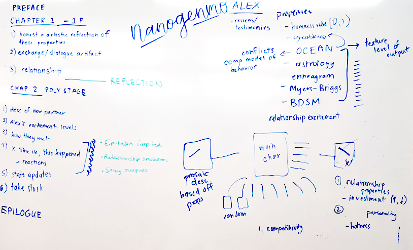
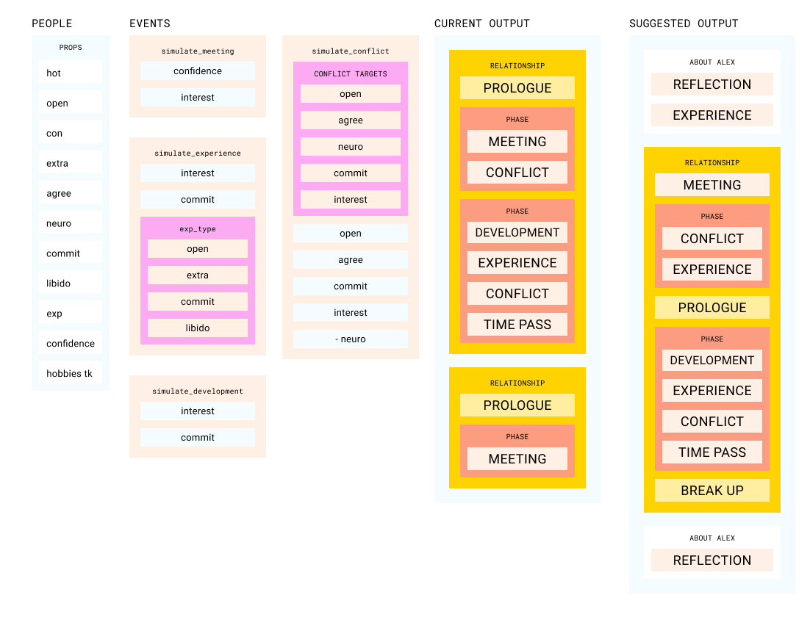

Making A.L.E.X
A.L.E.X. is a computationally-generated relationship simulator, focused on narrating the many romantic exploits of our protagonist Alex. A.L.E.X was originally developed for NaNoGenMo 2020 for Computational Approaches to Narrative.
By approaching people and relationships computationally we were able to encode our own assumptions and ask if they reflected reality. What damages relationships? What factors into initial attraction? How can a person be changed by their romantic relationships over time?
Project Goals
- To create a generated story that was both narrative and interesting to read
- To create an interesting system that could simulate reality
- To identify factors that lead to attraction and compatability
- To simulate a relationships and it's effects on an individual
The three of us used this project to examine our questions around growth and romantic relationships. We attempted to quantify our own personal experiences and built a system that could reflect those experiences back to us, through Alex. Our protagonist initiates connection familiar and human ways—sidelong glances, shy smiles—but we were equally interested in moments where the simulation showed its seams and generated something unbelievable or incongruent. There is something funny about reading, after every paragraph, that Alex has yet to mention their partner to their parents.
While we knew that romantic relationships were too varied to capture in a simulation we engaged in honest, critical conversation about what we thought relationships are and what they feel like. We hope that reading about Alex's exploits can offer some entertainment and entice curiosity while sometimes feeling intimate and real.
Development Process
The project was developed over the course of 6 weeks. We developed asynchronously over github and held three co-working and whiteboard sessions where we developed key system interactions.
The first iteration of the system had simple text outputs with the numerical values of the various properties that were being tested. You can see an example of that output here. We felt confident about the logic behind each event in the relationships, but we weren't utilizing all the properties available, and the textual output left a lot ot be desired. We created a system diagram to get more perspective on what we had to work with.
While critiquing the system diagram, we also also wrote a sample output story. We tried to identify where our current system could produce more interesting narration, and outlined the reflection chapters where Alex changed over time. This also allowed us to discuss artifacts, implimented in this version as text messages.
We also shifted our grammar to tracery during the last leg of the projects. This allowed us to easily rank narrative outputs to the couples properties. We also implemented a hobby system that gives each individual 1-3 hobbies, and they’re able to go on dates associated with their hobbies. This added an extra level of interest and specificity to each relationship with relatively low lift.
Unsurprisingly, our simulation could not encode the complexities of human connection and falls short of convincing realism. We were still pleased by the tension produced by the narrative—Alex might text someone constantly after meeting but never go on a second date, and though the dialogue is obviously generated, a situation might feel familiar.
Next Steps
We have plans for Alex's future! The goals for the NaNoGenMo project were pretty simple: we wanted to simulate a relationships events on an individual and break people down into organized systems. We wanted to generate relationships computationally and to see what amusing and relatable anecdotes emerged.
Even though "realism" might be beyond our grasp, we think there's a lot of potential for narrative tension and Alex as a character. We hope to build upon this system to create a more focused story with a generated narrative arc.
Check the github for updates!